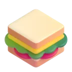

My English World
Book 5 · Think & Say
Unit 22
A Picnic
Tap any picture or sentence to listen.
🔍 Look and think
Q
Where are Dad and Leo?
A
They're in the park.
Q
What are they having?
A
A picnic.
Q
What food would you take?
A
Sandwiches and fruit.
Q
Is there a ball?
A
Yes, there is.
Q
How many clouds are there?
A
There are two clouds.
Q
Is it a nice day?
A
Yes, it is.
▶ Play all
🗣️ Talk about the picture
Dad and Leo are having a picnic.
🔊
They are in the park.
🔊
It's a lovely day.
🔊
They have got sandwiches and fruit.
🔊
After lunch, they play football.
🔊
Leo loves picnics!
🔊
▶ Play all sentences
🧩 Sentence patterns
We need some ___.

We need some sandwiches.
🔊
We need some grapes.
🔊
We need some juice.
🔊
We need some cookies.
🔊
▶ Play pattern 1
First ___, then ___.
First we eat, then we play.
🔊
First wash your hands, then eat.
🔊
First do your homework, then play.
🔊
First brush your teeth, then sleep.
🔊
▶ Play pattern 2
‹ A Rainy Day
All units
My Shopping List ›